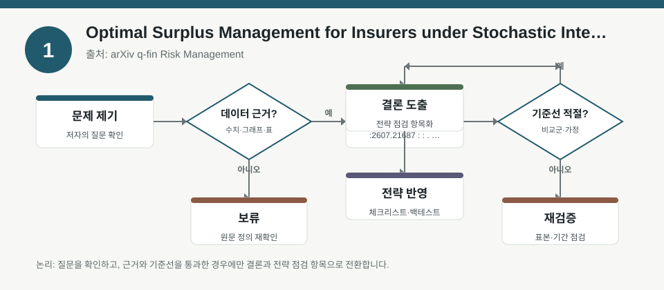
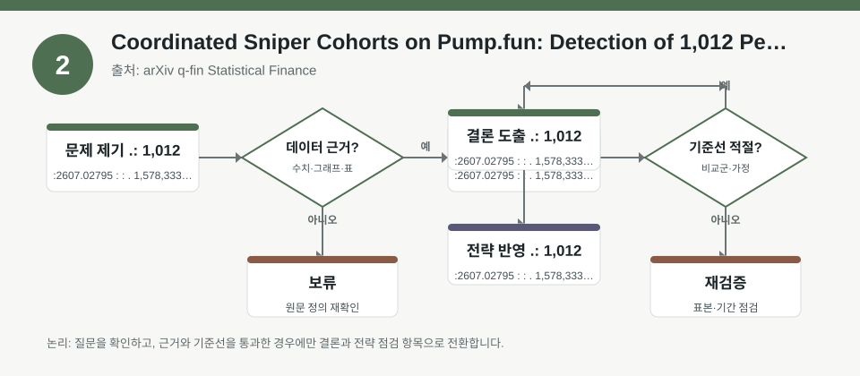
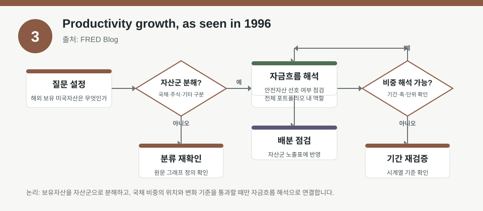

핵심 요약
- 결론: 세 자료 모두 “숫자 자체”보다 가정·측정오차·행동편향을 먼저 점검해야 한국 투자자의 업종·환율·금리 민감도 점검에 더 유용합니다.
- 원칙: 본문 수치는 원문 메타데이터에 있는 범위만 사실로 두고, 상세 수치가 없는 부분은 검증 필요 항목으로 분리해서 해석해야 합니다.
주목할 자료
| 번호 | 자료 | 출처 | 원문 | 핵심 내용 | 데이터 포인트 | 리스크/한계 |
|---|---|---|---|---|---|---|
| 1 | Optimal Surplus Management for Insurers under Stochastic Interest Rates and Jump-Driven Liabilities | arXiv q-fin Risk Management | 원문 보기 | 보험사 잉여자산을 주가·채권에 배분할 때 금리 변동과 점프성 부채를 함께 반영한 최적화 문제를 다룹니다. | 확률적 금리, 점프-유도 부채, 위험자산/무위험채권 배분 | 모형의 금리·청구점프 분포 가정, 추정 파라미터, 실제 규제자본 반영 여부는 원문 검증이 필요합니다. |
| 2 | Coordinated Sniper Cohorts on Pump.fun: Detection of 1,012 Persistent Wallet Rings and the Limits of Naive Causal Inference for First-Hour Buyer Flow | arXiv q-fin Statistical Finance | 원문 보기 | 펌프펀 시장의 첫 시간 매수 흐름에서 지갑 군집과 조정 매매를 탐지하고, 단순 인과추론의 한계를 점검합니다. | 1,578,333건 매수 관측, 166,098개 토큰 런치, 1,012개 지속 지갑 링 탐지 | 관측 기간이 짧고 시장 구조가 특수하며, 탐지 규칙의 오탐·미탐과 인과 해석 한계가 핵심 검증 포인트입니다. |
| 3 | Productivity growth, as seen in 1996 | FRED Blog | 원문 보기 | AI 붐 속 생산성 통계의 측정 지연과 한계를 1990년대 사례와 연결해, 통계 해석이 통화정책 기대에 미치는 영향을 설명합니다. | 공식 통계의 측정 지연, 생산성 해석, 정책 판단 시차 | 생산성 수치 자체보다 측정오차·시차·구조변화 여부를 봐야 하며, 한국 적용 시 산업별 비교 가능성은 별도 검증이 필요합니다. |
자료별 상세
1. Optimal Surplus Management for Insurers under Stochastic Interest Rates and Jump-Driven Liabilities

- 핵심: 금리 경로가 고정되지 않고 부채가 점프 형태로 발생할 때, 자산배분 최적화는 평균수익률보다 분포와 꼬리위험에 더 민감해집니다.
- 데이터 포인트: 확률적 금리와 점프-유도 부채를 동시에 두고, 위험자산과 무위험 제로쿠폰채권 사이의 배분을 분석합니다.
- 리스크: 금리 모형, 점프 크기·빈도, 보험금 청구의 독립성 가정이 실제 한국 시장과 다를 수 있어 결과 이식성 검토가 필요합니다.
- 투자전략 반영 예시: 한국 투자자는 KOSPI 금융주·보험주 노출과 장기채 민감도를 함께 점검하고, 금리·신용스프레드·규제자본 변동을 체크리스트에 넣을 수 있습니다.
- 실행 예시: 포트폴리오 점검표에 “금리 1차 변수, 부채 점프 시나리오, 채권 듀레이션, 보험·금융 섹터 비중, 규제 이벤트”를 분리해 기록합니다.
2. Coordinated Sniper Cohorts on Pump.fun: Detection of 1,012 Persistent Wallet Rings and the Limits of Naive Causal Inference for First-Hour Buyer Flow

- 핵심: 첫 시간 매수 흐름은 수요의 자연발생적 신호일 수도 있지만, 지갑 군집의 조정행동이 섞이면 초반 유동성 해석이 왜곡될 수 있습니다.
- 데이터 포인트: 1,578,333건의 매수 관측과 166,098개 토큰 런치에서 1,012개의 지속 지갑 링을 탐지했다고 메타데이터가 제시합니다.
- 리스크: 펌프펀과 솔라나 기반 토큰은 전통 주식시장과 미시구조가 달라, 해당 결과를 KOSDAQ 소형주 수급에 직결시키면 과잉해석이 될 수 있습니다.
- 투자전략 반영 예시: 한국 투자자는 테마 급등주·저유동성 종목에서 초기 거래량, 계좌 집중도, 공시 여부, 단기 차입·공매도 가능성을 별도 점검할 수 있습니다.
- 실행 예시: 이벤트 드리븐 점검표에 “첫 1시간 거래대금 집중도, 반복 계좌 패턴, 시세 급변 원인, 공시 확인, 거래정지·규제 가능성”을 넣어 봅니다.
3. Productivity growth, as seen in 1996

- 핵심: 생산성은 실제 경제 체감보다 늦게 잡히거나 과소·과대측정될 수 있어, AI나 신기술 붐을 곧바로 성장률 개선으로 단정하면 안 됩니다.
- 데이터 포인트: 메타데이터는 1990년대 사례를 통해 공식 통계의 측정 지연과 정책 해석 문제를 다루며, 수치 자체는 제공하지 않습니다.
- 리스크: 구체적인 생산성 수치, 산업별 분해, 한국과 미국의 통계 방식 차이는 원문에서 확인이 필요합니다.
- 투자전략 반영 예시: 한국 투자자는 반도체·IT·산업재 업종에서 생산성 개선 기대를 볼 때, 실적 추정치보다 고용·설비투자·수출·임금 지표의 동행 여부를 함께 확인할 수 있습니다.
- 실행 예시: 거시 체크리스트에 “생산성 기사 확인 후, 한국 산업생산·수출·물가·임금·금리 기대가 서로 같은 방향인지”를 점검 항목으로 추가합니다.
팩터·리스크·포트폴리오 관점
- 핵심: 세 자료는 공통적으로 팩터 노출을 볼 때 단일 지표보다 금리, 유동성, 꼬리위험, 측정오차, 행동편향을 함께 봐야 한다는 점을 보여줍니다.
- 검수: 메타데이터에 없는 구체 계수, 표본 구간별 성과, 추정모형 설정, 통계 유의성은 원문 확인 전에는 사실로 단정하면 안 됩니다.
정리
- 결론: 한국 투자자에게는 “수익률 전망”보다 “어떤 가정이 깨지면 해석이 무너지는가”를 먼저 묻는 태도가 더 실용적입니다.
- 다음 확인: 원문에서 표본 기간, 모형 가정, 오탐·미탐, 규제·통계 정의 차이를 확인한 뒤 KOSPI/KOSDAQ 업종 점검표에만 반영하는 것이 안전합니다.